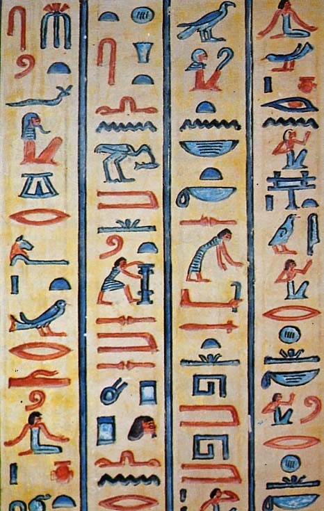

Existing Languages

For Problems
- System specific, e.g., Otter, LOP, ...
- DFG ...
Hard to parse, read, write.
No formula independence.
- KIF ...
Beyond the requirements of ATP.
- XML SCL ...
Under construction (for ever).
- OpenMath, MathML, OmDoc ...
Concerned with meaning and presentation.
- TPTP ...
Easy to parse, read, write.
Widely used.
Different CNF and FOF.
For Solutions
- All system specific, e.g., PCL, IVY, Bliksem, Vampire, ...
- Inconsistent with problem languages
- Do not carry enough information for postprocessing